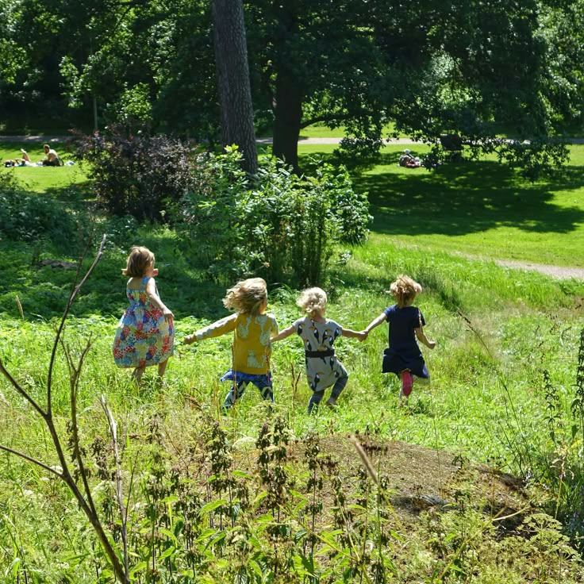

Esta experiencia me hizo recordar a Virginia Zavala (2009), quien explica que la lectura y la escritura son prácticas sociales que adquieren sentido en contextos concretos. No leemos ni escribimos solamente para cumplir una tarea; también lo hacemos para interpretar el mundo, comunicarnos y expresar quiénes somos. Judith Kalman (2008) me ayuda a pensar en las oportunidades que tenemos para participar en la cultura escrita. Entonces, ¿qué sucede cuando escribir se convierte únicamente en copiar del tablero? ¿Qué espacio queda para que un niño exprese sus propias ideas?
Estas preguntas se relacionan con mi segundo caso memorable, en el que reflexioné sobre el texto de Elisabel Rubiano Albornoz (2015). Su trabajo destaca la importancia de acercar a los niños a la lectura mediante cuentos, canciones, imágenes y experiencias afectivas. Esto me hizo pensar que despertar el interés también implica considerar cómo presentamos las actividades y qué oportunidades ofrecemos para participar. Asimismo, Emilia Ferreiro (2019) me permite comprender que los niños construyen conocimientos sobre la escritura y que sus procesos no deberían valorarse únicamente por el resultado final.
Aprender también fuera del aula
Por otra parte, mi primer caso memorable, relacionado con las visitas realizadas durante la Licenciatura, especialmente a UTS La Leonera, me llevó a reconocer que también aprendemos cuando exploramos otros espacios, observamos el entorno y compartimos experiencias. Esto me hizo cuestionar por qué, en algunos momentos de la vida escolar, parece haber tan poco margen para aprender de maneras distintas a las actividades habituales del aula.

La fotografía acompaña visualmente esta reflexión; no se presenta como registro de una visita específica.
Una reflexión que sigue abierta
No pretendo juzgar por completo a una docente ni decir que ya sé cómo resolver estas situaciones. Apenas estoy construyendo mi manera de entender la educación. Sin embargo, aquella jornada me hizo pensar en lo difícil que puede ser la infancia cuando los niños deben adaptarse a un mundo organizado por adultos, con normas y expectativas que no siempre consideran sus formas de comprender las cosas. Me pregunto cuánto espacio tienen para expresar lo que sienten, hacer preguntas o aprender de una manera diferente.
Por ahora, no tengo una respuesta definitiva. Quiero aprender a reconocer cuándo una actividad deja de tener sentido para un niño y cómo acompañarlo de otra manera. Quizá mi mayor aprendizaje de aquella práctica no fue descubrir cómo enseñar a escribir, sino empezar a preguntarme qué significa realmente acompañar a alguien mientras aprende.
Una experiencia, muchas preguntas y una manera distinta de mirar la infancia.
Referencias del primer apartado
Zavala, V. (2009). La literacidad o lo que la gente hace con la lectura y la escritura. En D. Cassany (Ed.), Para ser letrados (pp. 23–35). Paidós.
Kalman, J. (2008). Discusiones conceptuales en el campo de la cultura escrita. Revista Iberoamericana de Educación, (46), 107–134. https://doi.org/10.35362/rie460719
Rubiano Albornoz, E. (2015). Palabras que nutren y arrullan. Avances del proyecto disposición lectora para bebés. Educere, 19(62), 193–201.
Ferreiro, E. (2019). Research perspectives in beginning literacy: Methodological and epistemic dichotomies / Prospectivas en investigación sobre alfabetización inicial. Dicotomías metodológicas y epistemológicas. Infancia y Aprendizaje, 42(1), 1–36. https://doi.org/10.1080/02103702.2018.1550174